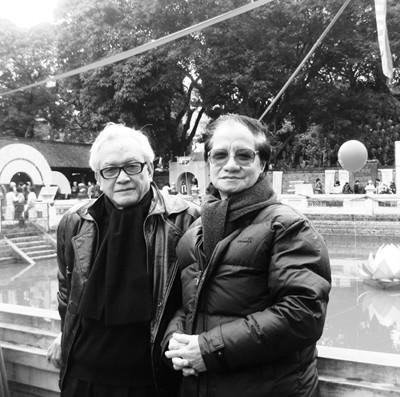

“Ừ, nghề của chúng tôi cũng là một nghề hèn, nghề mọn. Hèn vì nghĩ nhiều mà không dám nói ra, mọn vì cái làm ra cũng chẳng mấy ai cần đến.
Ông có cái lò gạch đâu có biết, bấy lâu nay chúng tôi mắc phải một thói quen cố hữu: chỉ mong sao làm vừa lòng bề trên – Một cuốn sách, một vở diễn, một bộ phim ra đời đâu có mấy phụ thuộc vào sự hữu hiệu của nó với cuộc đời, lại chẳng mấy phụ thuộc vào mong muốn của những người lam lũ như ông – mà thường, nhất nhất trông đợi ở sự xem xét của bề trên chúng tôi.
Bề trên chúng tôi bằng lòng thì được, không bằng lòng ắt phải bỏ.
Bề trên chúng tôi khen, thì chúng tôi sung sướng.
Bề trên chúng tôi chê, thì chúng tôi buồn rầu.”
(Lời trong phim “Chuyện Tử Tế” 1985-1987)
“Từ rất xa xưa, cha bác có dạy rằng: Tử tế vốn có trong mỗi con người, mỗi nhà, mỗi dòng họ, mỗi dân tộc. Hãy bền bỉ đánh thức sự tử tế, đặt nó lên bàn thờ tổ tiên hay trên lễ đài của quốc gia, bởi thiếu nó, một cộng đồng dù có nỗ lực tột bực và chí hướng cao xa đến mấy thì cũng chỉ là những điều vớ vẩn. Hãy hướng con trẻ và cả người lớn đầu tiên vào việc học làm người, người tử tế trước khi mong muốn và chăn dắt họ trở thành những người có quyền hành, giỏi giang, hoặc siêu phàm...”
“Vậy ra, nghĩ cho đến cùng, ở trên đời này, không có một nghề nghiệp nào, không có một công việc gì, và cũng không có một con người nào trở nên tử tế - nếu không bắt đầu từ tình thương yêu con người, sự trân trọng đối với con người và đi từ nỗi đau của con người.”
(Lời trong phim “Chuyện Tử Tế”)
Nhân Dân! Hai tiếng thật thiêng liêng - Chẳng thế mà Nhân Dân có mặt ở khắp nơi - Về văn hóa thì có: Nghệ sĩ Nhân Dân, hiệu sách Nhân Dân, giáo viên Nhân Dân, nhà hát Nhân Dân, báo Nhân Dân - Ở những cơ quan nghiêm mật thì có: Hội đồng Nhân Dân, Ủy ban Nhân Dân, Tòa án Nhân Dân, Viện kiểm sát Nhân Dân, Công an Nhân Dân, Quân đội Nhân Dân...
Nhưng phải nhận rằng: chẳng có mấy bộ phim miêu tả nhân dân ăn ra sao? Nhân dân ở ra sao? Nhân dân đi lại sinh sống như thế nào; và nhất là nhân dân nghĩ ngợi, bàn tán những gì...
...Khi chúng ta chưa có chính quyền trong tay, thì nhân vật của văn nghệ chủ yếu là những người nghèo khổ: Một bác phu xe, một em bé bán báo, một bé đi ở, một bà mẹ nghèo, một tiếng rao đêm.
Ngày nay, khi quyền hành đã về một mối, thì những người nghèo khổ, bất hạnh trong văn nghệ bỗng dưng biến mất.
Y như đồng bào của chúng ta bây giờ rất xa lạ với sự nghèo khổ, hoặc giả những người nghèo khổ đã chạy sang thế giới bên kia cả rồi.
Ăn ở với nhau như vậy thì, không những chưa được tử tế cho lắm mà còn... đáng sợ.
(Lời trong phim “Chuyện Tử Tế”)
“Phim của Trần Văn Thủy thường gửi lại trong ký ức ta hình ảnh buồn. Buồn nhưng không thảm. Buồn như một câu hỏi day dứt vì sao lại như thế. Và như thế thì phải làm sao. Phim của Trần Văn Thủy là nỗi buồn lớn.
...Nhiều người cho rằng Trần Văn Thủy là nhà làm phim cách tân. Tôi lại thấy đạo diễn này đi trên con đường sáng tạo nghệ thuật truyền thống. Ðúng là “Hà Nội Trong Mắt Ai” (1982), “Chuyện Tử Tế” (1985) đã như những quả bộc phá gây sóng gió trên mặt hồ thu nghệ thuật. Dư chấn của nó ảnh hưởng đến tận giới làm phim quốc tế. Nhưng tính dũng cảm lại là cột sống của nghệ thuật truyền thống. Và hơn thế, nhân vật chính trong phim của Trần Văn Thủy cũng là nhân vật truyền thống: Nhân dân.”
– Nhà báo Vĩnh Quyền - Lao Ðộng Cuối Tuần.
☆
Dân quyền được đề cao thì nhân dân được tôn trọng mà nước cũng mạnh.
Dân quyền bị xem nhẹ thì dân bị coi khinh mà nước cũng yếu.
Dân quyền hoàn toàn mất thì dân mất mà nước cũng mất.
— Phan Bội Châu (1867 – 1940)
Website Quốc Hội Việt Nam 16-1-2013

Lê Thanh Dũng và Trần Văn Thủy
Văn Miếu – ngày Nguyên Tiêu
☆